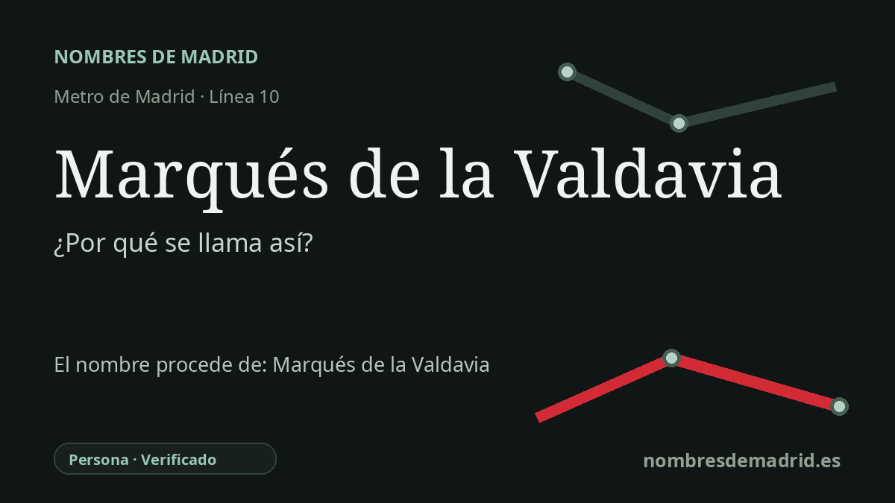

Publicado el · Investigación de Nombres de Madrid · Cómo verificamos cada origen · 9 fuentes consultadas
Respuesta rápida
La estación toma su nombre de la calle Marqués de la Valdavia de Alcobendas, que el Ayuntamiento bautizó en 1958 en honor de Mariano Ossorio Arévalo, III marqués de la Valdavia y presidente de la Diputación Provincial de Madrid. El título nobiliario remite en último término a La Valdavia, valle fluvial y comarca de Palencia.
La historia del nombre
La estación de Marqués de la Valdavia es una parada de MetroNorte en la línea 10, dentro de Alcobendas. Su origen inmediato no es una plaza madrileña, sino la calle Marqués de la Valdavia, una de las vías que delimitan el entorno de la estación junto al Parque de Cataluña y el paseo de la Chopera.
El nombre de la calle está documentado en una publicación municipal sobre la historia del callejero alcobendense. Según esa fuente, el Pleno del Ayuntamiento acordó el 15 de febrero de 1958 dar este nombre al antiguo tramo conocido como Carretera del Plantío, en honor de Mariano Ossorio Arévalo, III marqués de la Valdavia, como agradecimiento por el interés mostrado hacia el pueblo de Alcobendas.
Ossorio Arévalo pertenecía a una familia política vinculada a Palencia y heredó un título nobiliario cuyo nombre procedía de La Valdavia. Desarrolló actividad política antes y después de la Guerra Civil y fue presidente de la Diputación Provincial de Madrid entre 1947 y 1965, además de ocupar cargos durante el franquismo, entre ellos procurador en Cortes y delegado nacional de Ex Cautivos.
El título que hay detrás del nombre de la calle es más antiguo que la persona homenajeada por Alcobendas. Los registros de autoridad archivística sitúan la concesión del marquesado de la Valdavia en 1883 a Josefa Lamadrid Cosío, y el Archivo Regional de la Comunidad de Madrid lo describe como una recompensa de Alfonso XII por servicios relacionados con la agricultura, la beneficencia y la riqueza pública. La palabra Valdavia remite geográficamente a un valle fluvial y comarca de Palencia, de modo que una estación del metro madrileño conserva un topónimo palentino por medio de un título nobiliario y después de una calle alcobendense.
El nombre de la estación no estuvo libre de polémica. En febrero de 2007, antes de la apertura de MetroNorte, el alcalde de Alcobendas, José Caballero, defendió que la estación debía llamarse Parque de Cataluña porque ese era su emplazamiento físico; la Comunidad de Madrid respondió que los nombres se habían consensuado con asociaciones vecinales y elegido para facilitar la localización. La evidencia actual respalda con fuerza la cadena estación-calle-III marqués, mientras que deben corregirse la referencia anterior a la Plaza Duque de Pastrana y la atribución al II marqués.